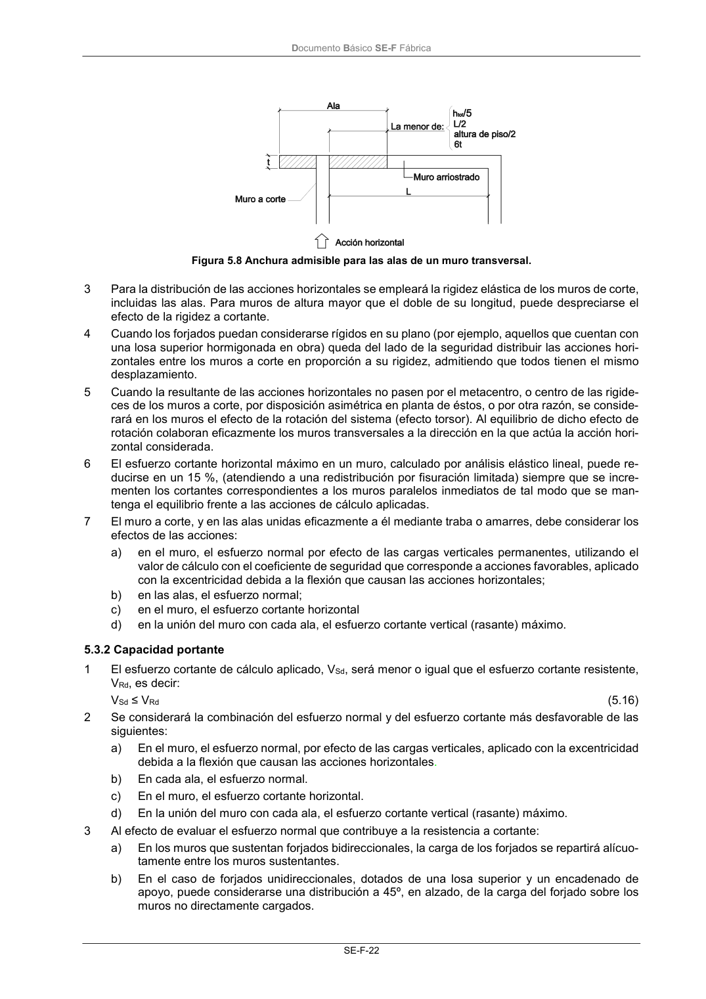
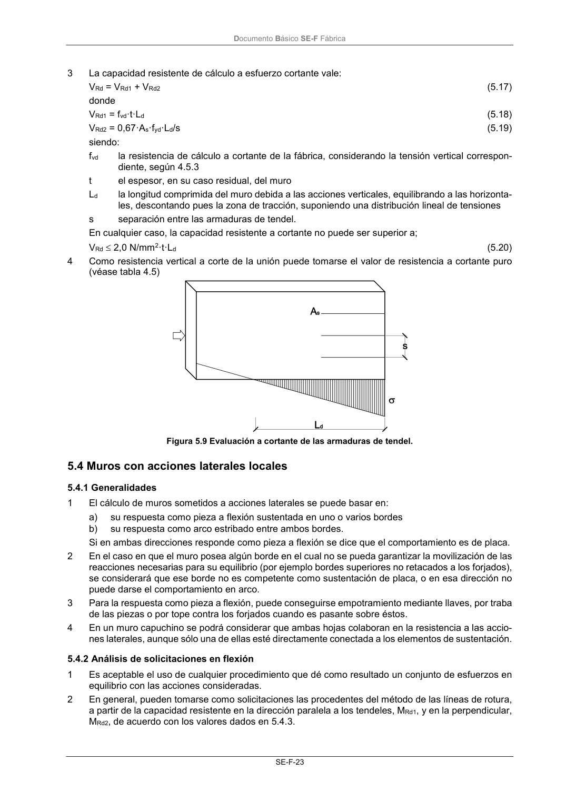

DB-SE-F Fábrica · edición 2019-12-20 · capa oficial
Documento DB-SE-F-oficial · SHA-256 del PDF e3e0805c3b4c307519c26dc34c3fdbf143d842edd013c91b0f52d2c73403d91c
Copia fiel del PDF fuente · Fuente oficial
Ficha de la disposición en la fuente oficial
Formatos: JSON del segmento · Markdown
5.3.2 Capacidad portante 1 El esfuerzo cortante de cálculo aplicado, VSd, será menor o igual que el esfuerzo cortante resistente, VRd, es decir: VSd ≤ VRd (5.16) 2 Se considerará la combinación del esfuerzo normal y del esfuerzo cortante más desfavorable de las siguientes: a) En el muro, el esfuerzo normal, por efecto de las cargas verticales, aplicado con la excentricidad debida a la flexión que causan las acciones horizontales. b) En cada ala, el esfuerzo normal. c) En el muro, el esfuerzo cortante horizontal. d) En la unión del muro con cada ala, el esfuerzo cortante vertical (rasante) máximo. 3 Al efecto de evaluar el esfuerzo normal que contribuye a la resistencia a cortante: a) En los muros que sustentan forjados bidireccionales, la carga de los forjados se repartirá alícuo- tamente entre los muros sustentantes. b) En el caso de forjados unidireccionales, dotados de una losa superior y un encadenado de apoyo, puede considerarse una distribución a 45º, en alzado, de la carga del forjado sobre los muros no directamente cargados. Documento Básico SE-F Fábrica SE-F-23 3 La capacidad resistente de cálculo a esfuerzo cortante vale: VRd = VRd1 + VRd2 (5.17) donde VRd1 = fvd·t·Ld (5.18) VRd2 = 0,67·As·fyd·Ld/s (5.19) siendo: fvd la resistencia de cálculo a cortante de la fábrica, considerando la tensión vertical correspon- diente, según 4.5.3 t el espesor, en su caso residual, del muro Ld la longitud comprimida del muro debida a las acciones verticales, equilibrando a las horizonta- les, descontando pues la zona de tracción, suponiendo una distribución lineal de tensiones s separación entre las armaduras de tendel. En cualquier caso, la capacidad resistente a cortante no puede ser superior a; VRd 2,0 N/mm2·t·Ld (5.20) 4 Como resistencia vertical a corte de la unión puede tomarse el valor de resistencia a cortante puro (véase tabla 4.5) Figura 5.9 Evaluación a cortante de las armaduras de tendel.

